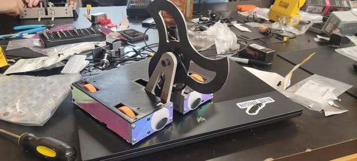

Beetleweight Battlebot
Our team had about two months to design, build, and program a 3 lb battlebot.
I developed most of the drivetrain and weapon CAD.
We started in Onshape, moved to SolidWorks, and evaluated three drive-base and weapon iterations before building the final design.
The robot was functional, but motor/electronics interference and a fragile motor mount limited reliability. Those issues showed where the packaging and mount design needed improvement.

